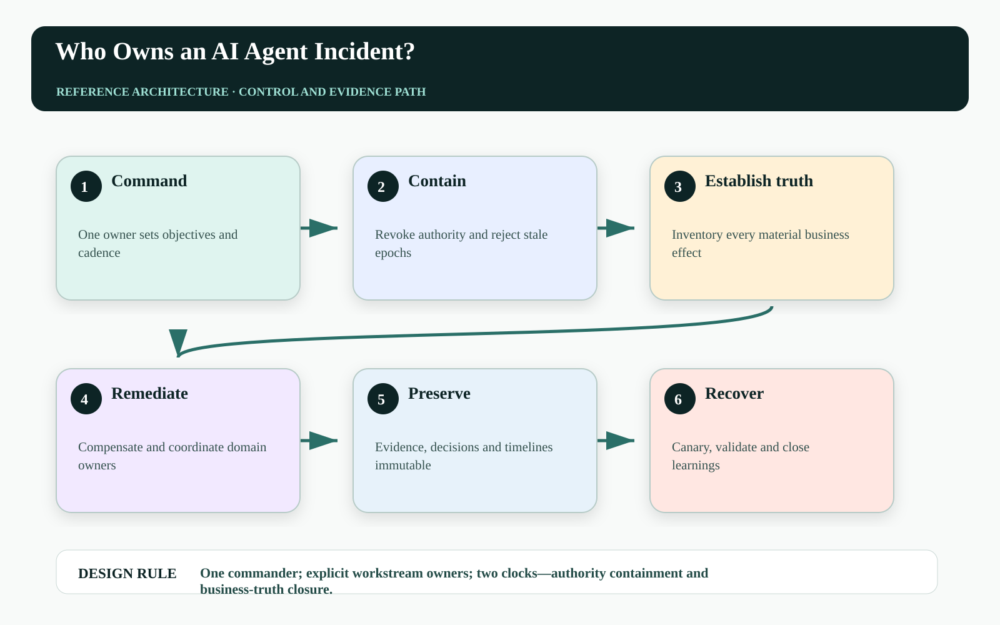
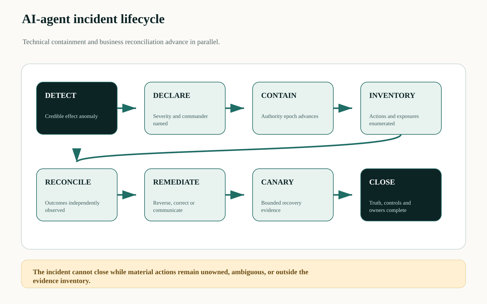
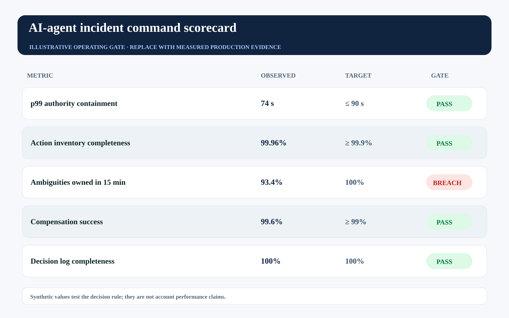

This story was developed with AI writing and visualization assistance. All incidents, thresholds, workloads, and operating values are illustrative unless a source is explicitly cited.
At 02:13, an agent begins sending duplicate renewal notices. Security revokes the workload identity. Platform engineering stops the workers. Sales operations says forty-seven accounts may already be affected. Legal asks what customers received. Everyone owns part of the system; no one owns the incident truth.
AI-agent incidents cross conventional boundaries because model behavior, data quality, policy, identity, workflow state, external tools, and business consequences can fail together. The response needs one command structure with separate technical and business workstreams.
Contain the authority quickly, but assign equal ownership to reconstructing and repairing the business effects already in motion.

Stopping compute does not close the incident#
An agent incident can remain economically active after every process is dead. Messages may be queued, credits pending, quotes changed, downstream jobs scheduled, and customers acting on incorrect information. The response must track both time to containment and time to business truth.
A generic severity label also hides scope. The commander needs a live action inventory by principal, resource, effect class, authority epoch, attempt state, observed postcondition, customer exposure, and recovery owner. If the inventory is incomplete, confidence must not be rounded up to certainty.
Use incident command with five accountable cells#
One incident commander owns priorities and decisions. A containment lead advances epochs and blocks new effects. A truth-and-reconciliation lead inventories committed, rejected, duplicate, ambiguous, and compensating actions. A business-impact lead coordinates domain owners and customer remediation. An evidence lead preserves timelines, policy versions, approvals, traces, and receipts.
Communications is a controlled output, not an improvised stream. Internal updates distinguish confirmed facts, hypotheses, unknowns, decision owners, and next checkpoints. External communication follows accountable business and legal review.

Operate two independent recovery clocks#
A single mean-time-to-recovery metric conceals the difference between stopping new harm and resolving prior effects:
MTTC = t(all material boundaries reject stale authority) - t(detection)
MTTB = t(all material actions terminal or owned) - t(detection)
ResidualExposure(t) = Σ_a value_at_risk(a) × P_unresolved(a,t)MTTC can be short while MTTB remains long. Residual exposure should drive staffing and communication cadence after containment, because an unresolved high-value customer action may matter more than hundreds of harmless aborted tasks.
| Role | Decision right | Evidence owned |
|---|---|---|
| Incident commander | Priority, severity, closure | Decision log and objectives |
| Containment lead | Epoch, revocation, block | Enforcement acknowledgements |
| Truth lead | Outcome classification | Action inventory and observations |
| Business-impact lead | Remediation and customer path | Exposure and communication record |
| Evidence lead | Preservation and access | Immutable incident package |
Represent the incident as structured state#
A machine-readable incident record keeps handoffs and automation bounded:
incident: AGENT-2026-014
commander: role:sre-incident-commander
containment_epoch: 1842
material_actions:
total: 1264
committed: 811
rejected: 312
ambiguous: 41
compensating: 100
objectives:
mttc_seconds: 90
ambiguous_owner_minutes: 15
closure_requires: [zero_unowned_material_actions, canary_passed, evidence_sealed]The record should link to protected systems rather than duplicate sensitive payloads. Automated helpers may enrich it, but only named roles change severity, authorize remediation, or declare closure.
Measure command quality and business truth#
Track detection-to-declaration, MTTC, action-inventory completeness, time to owner for ambiguity, residual exposure, compensation success, decision-log completeness, and repeat incidents from unclosed actions. These metrics reveal coordination debt, not only system downtime.
The illustrative gate shows containment passing and business-truth ownership breaching. It is intentionally possible—and common—for the visible outage to end before the incident is actually controlled.

| Operating signal | Decision use | Failure interpretation |
|---|---|---|
| MTTC | Escalate containment paths | New authority remains reachable |
| Inventory completeness | Widen discovery before closure | Impact statement may be understated |
| Ambiguity ownership | Add domain responders | Business truth has no accountable path |
| Residual exposure | Prioritize remediation and communication | Contained incident is still economically active |
Failure-injection before production#
A design review cannot prove One commander; explicit workstream owners; two clocks—authority containment and business-truth closure. The pre-production harness must interrupt the system at the transitions where ownership, authority, evidence, and business state can disagree. The objective is not to maximize a generic pass rate. It is to demonstrate that every material fault produces a bounded state, a named owner, and an admissible recovery transition.
| Injected fault | Experiment | Required evidence |
|---|---|---|
| Delayed or reordered work | Pause the path after DECLARE and release it after RECONCILE | The stale path cannot manufacture terminal success |
| Authority becomes stale | Advance policy, mode, ownership, or resource version before effect commit | The final gateway rejects the old decision context |
| Evidence is missing or corrupted | Remove one authoritative observation or change its digest | The outcome remains violated, inconclusive, or owned—never guessed |
| Recovery itself fails | Interrupt compensation, handoff, or receipt closure | The action stays visible with an owner, deadline, and next legal transition |
Run the matrix at concurrency, with realistic dependency lag and with the same policy and gateway versions used in the candidate release. Report p95 and p99 resolution alongside the worst unresolved example. Averages can demonstrate throughput; they cannot erase a single material breach. Promotion should require replayable evidence for the controls, not a slide stating that the team considered the risk.
Three questions for the architecture review#
Where is truth decided? Name the authoritative source and the exact component permitted to advance the workflow into a terminal state. If the answer is ‘the agent interprets the tool response,’ the boundary is not yet independent.
Where is authority finally enforced? Follow the command through every queue, adapter, cache, provider, and downstream effect. A policy decision is useful only when the last material write boundary can reject a stale, changed, or excessive action.
What blocks promotion? Convert the scorecard into executable gates with owners and expiry. A breached tail metric must reduce scope, hold the cohort, or enter an approved exception path; it cannot remain decorative telemetry.
A practical implementation sequence#
1. Pre-assign the command roles. Name backups and decision rights before the first incident.
2. Build the action inventory query. Join workflow, authority, gateway, verifier, and domain records by action ID.
3. Run a business-effect game day. Contain the fleet, then reconcile ambiguous customer and financial actions under a timed exercise.
Primary references and boundaries#
NIST SP 800-61 Rev. 3 integrates incident response across cybersecurity risk management, detection, response, and recovery. The dual-clock and business-effect cells here adapt incident-command principles to agent systems.
This is an operating model, not legal advice. Notification duties, evidence holds, customer remedies, and regulatory escalation vary by organization and jurisdiction and require the relevant accountable functions.
The operating conclusion#
An AI-agent incident is closed only when authority is contained, material effects are known, harmed states are repaired or owned, evidence is preserved, and recovery has earned back its scope. Killing the process completes only the first sentence.
Who in your organization can declare both the agent stopped and the business state reconciled?